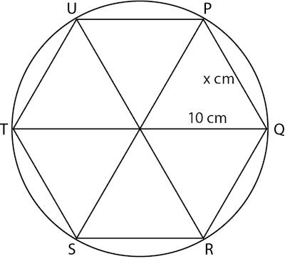
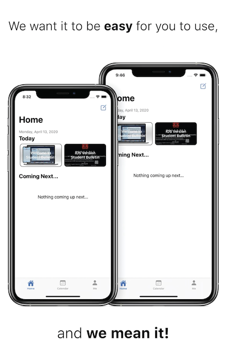

Creative Thinker
Exploration in Mathematics

In math class we are tasked to explore an area of interest of our choice. We can use any strategies (math tools, equations, theorems, etc.) to learn more about that topic. For my math IA, I chose to explore on how the constant π was developed. I used various method during the approach, including geometry and calculus. Exploring using geometry enables me to visualize the definition of the constant, while exploring through calculus allows me to calculate this constant to high degree of accuracy. During the process, I made use of multiple mathematics tools, in the beginning, I used a basic geometrical method by drawing multiple triangles on a paper and measuring the length, while later on, I developed a process using calculus, and programmed a computer to help me estimate the value of the constant.
Student Bulletin App

Student Bulletin is an app I've developed with a team of friends. This app aims to support the community in communication. It is a centralized platform that enables students to post latest news and events to share with everyone in the school. For this project, we started with identifying the need for communication within the school, then we start to develop a prototype of the solution to this problem, then we continue to iterate in order to create the solution that we have currently. There are many challenges I have encountered while developing this product. Since I never really had any experience creating a server-backed application, the first version is not quite ready to face the entire community using it at the same time. This resulted in the need to develop a brand new version, completely redesigning the backend, to make it more stable. To find solutions to these challenges, I used knowledge from both my classes, as well as online resources while designing each iteration, and improving it to make it more user-friendly to my school community.